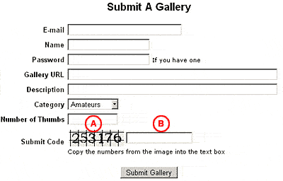

Introduction
AutoGallery SQL includes a submit code feature which, if activated, will require submitters to copy a series of numbers from a JPEG image
into a text input field. The main purpose of this feature is to prevent auto-submitters from submitting to your TGP. The submitter
will actually have to visit and look at the submission page in order to correctly enter the submit code. Generally you will get
higher quality galleries, with less chances of cheaters, from submitters who manually submit their galleries.
Enabling the Submit Code Feature
To enable the submit code feature, login to the control panel and click on the Edit Options link in the Setup section of the menu.
You will be taken to a page where you can configure the options for your TGP. In the Other Options section of that page you will
find two checkboxes:
Require general submitters to enter a submit code for gallery submission?
Require partners to enter a submit code for gallery submission?
Check one or the other, or both, depending on who you want to be required to enter a submit code. Once you have it set how you want
it, press the Save Options button at the top or bottom of the page.
Now when you visit the submit.cgi script to submit a gallery you will see a new field for the submit code.

A. This is the submit code generated by AutoGallery SQL
B. This is the text input field where the submitter will need to copy the submit code.
The submit code itself (A) has a series of lines on the image and will rotate through different fonts (if GD has been compiled with FreeType support). This
makes it much more difficult for auto-submitter programs to read the numbers from the image.
Using Dictonary Words
If you would rather use dictionary words for your submit codes you can enable that option in the Edit Options interface. However, before you do that
you will need to create a word list and upload it to your server. The software comes with a default word list that you can use, or you can create your own.
The word list is a plain text file with one word per line. You will need to name the file words and upload it to the data directory of your installation.
Once that file has been uploaded you can enable the dictionary word option in the Edit Options interface.
The default word list contains over 6600 English dictionary words. It is named words and is located in the data directory of the AutoGallery SQL distribution.
When you are using the dictionary words feature, the submit code length settings will be ignored. Each time someone accesses the gallery submission form, a word
will be randomly selected from the list you have supplied and displayed on the submit code image.
Using Your Own Fonts
If the GD library and perl module have been compiled with FreeType support on your server, you can select what fonts to use for the numbers on your submit code
image. If FreeType support is not available, a default GD font will always be used.
You can add as many fonts for the submit code as you like, and it is recommended that you either
add or change fonts every month or two. This keeps the auto-submit programs from adapting to your site and being able to read the submit code off the image.
AutoGallery SQL uses regular True-Type Fonts to display the submit code on the image. You can find thousands of true-type fonts on the internet at sites such as
fontfile.com. Once you have located some fonts you want to use, you will need to upload
them to your server. They should be uploaded in binary mode to the data/fonts directory of your AutoGallery SQL installation. Make sure you only upload .ttf files
to that directory.
Some fonts do not contain numbers, or cannot be correctly rendered by FreeType. For these reasons, you should always test new fonts. Once you have
uploaded a new font, you can test it with the code.cgi script. Simply enter the complete font filename (case sensitive) as the query string to the code.cgi script.
For example, if you uploaded a new font named My_Font.TTF, you would call the code.cgi script as:
http://www.yoursite.com/cgi-bin/tgp/code.cgi?My_Font.TTF
When you point your browser to this URL, AutoGallery SQL will generate an image with the numbers 1234567890. You should check to make sure that all of the numbers
are rendered correctly and readable. If you see a series of squares on the image, it means that the font cannot be correctly rendered and it should be
removed from your server.
Updated Submit Code Script
New in the 3.5.0 version is an optional update to the submit code script that provides better protection from automated gallery submission programs. Many of
these programs have added OCR support which allows them to read the letters and numbers from the submit code image. What we have done is to update the submit
code script to output a more difficult image to analyze. The main changes in this updated script are the following:
- Requires the GD library version 2.0.33 or newer
- Requires the GD Perl module version 2.23 or newer
- Both the library and Perl module need to be compiled with FreeType and PNG support
- There must be at least one true type font file uploaded to the data/fonts directory of your installation
- Image displays with a gradient filled background
- Each new image is generated with a random gradient color
- For each character in the submit code a random font is selected from the fonts you have uploaded
- Each character is displayed with a different font size
- Each character displays a drop shadow behind it
- Each character will be tilted slightly at a random angle
- A series of dots will be displayed accross the image
Here is an example of what the submit code might look like:
Before you install the updated submit code script, you should verify that your server meets the GD module requirements. From our
software tools page you can find a GD test script which will show you what version your server
has installed and if they have been compiled with FreeType support.
You can find the updated submit code script in the utilities directory of the AutoGallery SQL distribution. It is named code.cgi and is a drop in replacement
for the old code.cgi script. All you need to do is upload the new script overtop of the old script and make sure it's permissions are set to 755.